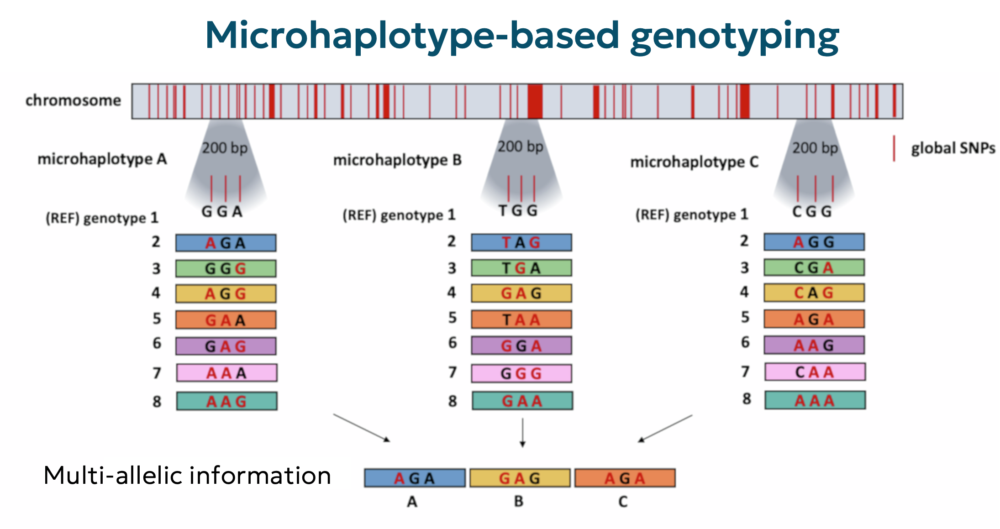

Marker-marker genetik: Kunci revolusi genomik dalam akuakultur
Marker-marker genetik: Kunci revolusi genomik dalam akuakultur
Oleh Agus Wibowo

Daftar isi
Pendahuluan
Akuakultur merupakan salah satu sektor pangan yang berkembang pesat di dunia saat ini, dengan produksi yang terus meningkat untuk memenuhi kebutuhan protein hewani global. Namun, untuk mencapai keberlanjutan dan produktivitas maksimal, industri akuakultur membutuhkan kemajuan genetik yang signifikan, sebagai salah satu kunci produktifitas dan keberlanjutan (sustainable aquaculture). Di sinilah marker genetik hadir sebagai alat revolusioner yang mengubah cara kita memahami dan memanfaatkan informasi genetik biota akuatik.
Marker genetik adalah segmen DNA yang dapat diidentifikasi dengan posisi fisik spesifik dalam genom dan berfungsi sebagai penanda variasi genetik antar individu. Berbeda dengan metode pemuliaan tradisional yang mengandalkan seleksi fenotipik, marker genetik memungkinkan seleksi pada level DNA, memberikan presisi yang lebih tinggi dan mempercepat proses pemuliaan. Keunggulan ini menjadi sangat penting dalam akuakultur, mengingat banyak sifat ekonomis penting pada ikan dan biota air lainnya sulit diukur, memiliki heritabilitas rendah, atau baru terekspresi pada tahap kehidupan lanjut.
Perkembangan teknologi marker genetik telah mengalami evolusi luar biasa dalam tiga dekade terakhir. Dari marker konvensional seperti RFLP dan RAPD hingga teknologi marker modern seperti SNP dan microhaplotypes, kemajuan ini telah membuka peluang baru dalam pemahaman struktur populasi, seleksi berbasis genom, dan konservasi sumber daya genetik akuatik. Artikel ini akan mengeksplorasi berbagai jenis marker genetik, aplikasinya dalam akuakultur, serta tantangan dan arah masa depan dalam pemanfaatan marker genetik untuk peningkatan produktivitas akuakultur.
Sejarah dan evolusi marker genetik
Perjalanan marker genetik dimulai dari era pra-molekuler dengan penggunaan marker morfologi dan biokimia. Marker morfologi mengandalkan ciri-ciri fisik yang dapat diamati secara langsung, sementara marker biokimia menganalisis variasi protein dan enzim. Namun, kedua jenis marker ini memiliki keterbatasan signifikan: marker morfologi sering terbatas pada jenis kelamin, tergantung usia, dan sangat dipengaruhi oleh lingkungan, sedangkan marker biokimia hanya mampu menunjukkan tingkat polimorfisme (variasi genetik) yang rendah.
Revolusi sejati dalam bidang marker genetik dimulai pada tahun 1974 dengan diperkenalkannya Restriction Fragment Length Polymorphism (RFLP), yang menandai era marker molekuler pertama. RFLP memungkinkan deteksi polimorfisme langsung pada tingkat DNA. Kemajuan signifikan berikutnya terjadi pada akhir 1980-an hingga awal 1990-an dengan pengembangan teknik PCR (Polymerase Chain Reaction) yang membuka jalan bagi marker berbasis PCR seperti Random Amplified Polymorphic DNA (RAPD) pada 1990 dan Amplified Fragment Length Polymorphism (AFLP) pada 1995.
Pada pertengahan 1990-an, pengembangan marker microsatellite atau Simple Sequence Repeats (SSR) membawa tingkat resolusi yang lebih tinggi dalam analisis genetik. Masuk ke abad ke-21, teknologi sekuensing generasi baru memungkinkan identifikasi dan pemanfaatan Single Nucleotide Polymorphism (SNP) dalam skala besar. Terkahir, perkembangan terbaru dengan microhaplotypes sebagai marker multi-alel yang diidentifikasi melalui sekuensing paralel masif (MPS) menunjukkan bahwa evolusi marker genetik terus berlangsung hingga saat ini.
Evolusi teknologi marker genetik ini merefleksikan peningkatan dalam beberapa aspek kunci: (i) jumlah loci (lokasi genetik) yang dapat dianalisis secara simultan, (ii) tingkat otomatisasi, (iii) kemampuan deteksi variasi genetik, dan (iv) kemudahan akses data genom referensi. Transisi dari marker dominan (seperti RAPD) ke marker kodominan (seperti microsatellite dan SNP) juga menandai peningkatan dalam keakuratan dan aplikasi marker genetik, terutama untuk program pemuliaan.
Marker-marker genetik konvensional
RFLP (Restriction Fragment Length Polymorphism)
RFLP merupakan marker genetik generasi pertama yang diperkenalkan pada tahun 1974 dan menjadi pionir dalam analisis variasi DNA. Teknik ini mendeteksi perbedaan panjang fragmen DNA setelah pemotongan dengan enzim restriksi, yang mengenali dan memotong DNA pada sekuens spesifik.
Prinsip kerjanya mulai dari DNA diisolasi, dipotong dengan enzim restriksi, difragmentasi melalui elektroforesis, ditransfer ke membran melalui Southern blotting, dan dihybridisasi dengan probe berlabel untuk mengidentifikasi fragmen target. Sehingga, adanya perbedaan pola pemotongan antarindividu merefleksikan variasi genetik.
RFLP merupakan terobosan besar karena memungkinkan deteksi polimorfisme langsung pada level DNA, tidak seperti marker morfologi atau biokimia sebelumnya. Marker ini juga bersifat kodominan yang memungkinkan identifikasi heterozigot dan homozigot.
RFLP telah digunakan untuk identifikasi spesies ikan, studi filogenetik, dan analisis struktur populasi. Dalam konteks pemuliaan, RFLP membantu mengidentifikasi lokus (satu lokasi genetik) yang terkait dengan sifat penting seperti pertumbuhan dan resistensi penyakit. Studi oleh Ravago-Gotanco et al (2010) menggunakan RFLP untuk identifikasi cepat tiga spesies target (Siganus canaliculatus, S. corallines, dan S. javus) menggunakan region gen mitokondria untuk memfasilitasi studi pola penyebaran larva dan konektivitas populasi.
Meskipun revolusioner, RFLP memiliki beberapa kelemahan, seperti (i) membutuhkan jumlah DNA yang relatif besar, (ii) proses analisis sangat tidak efisien, (iii) level polimorfisme terbatas, dan (iv) sulit diotomasikan untuk analisis skala besar. Sehingga saat ini penggunaan RFLP sudah banyak ditinggalkan.
RAPD (Random Amplified Polymorphic DNA)
RAPD diperkenalkan pada tahun 1990 sebagai teknik marker berbasis PCR yang menggunakan primer pendek acak untuk mengamplifikasi segmen DNA tanpa memerlukan pengetahuan awal tentang sekuens DNA target. RAPD menggunakan primer tunggal (biasanya 10-mer) untuk amplifikasi acak di bawah kondisi PCR spesifik. Kemudian, primer akan mengikat pada situs komplementer di kedua untai DNA jika jaraknya tidak lebih dari 3-4 kb. Produk PCR kemudian dideteksi pada gel agarosa, dan pola pita yang dihasilkan merepresentasikan “sidik jari DNA”.
RAPD menawarkan keunggulan signifikan dibandingkan RFLP, misalnya: (i) tidak memerlukan informasi sekuens awal, (2) membutuhkan DNA dalam jumlah lebih sedikit, (3) prosedur yang lebih sederhana dan cepat, dan (iv) dapat menghasilkan jumlah marker yang tidak terbatas hanya dengan mengubah kombinasi basa pada primer.
RAPD telah banyak digunakan untuk identifikasi takson, studi hibridisasi, perilaku reproduksi, dan struktur populasi genetik pada ikan. Bhattacharya et al. (2003) menggunakan analisis RAPD pada 20 sampel acak dari tiga breed sapi India untuk mengestimasi koefisien inbreeding, informasi penting untuk formulasi program pemuliaan di tingkat peternakan. Sementara dalam akuakultur, RAPD digunakan untuk studi keanekaragaman genetik pada spesies ikan ekonomis penting.
Namun demikian, sifat dominan RAPD (tidak dapat membedakan homozigot dominan dari heterozigot) membatasi interpretasi pola multi-lokus. Isu reproduktibilitas juga sering muncul karena sensitivitas teknik terhadap kondisi reaksi, kualitas DNA, dan konsentrasi reagen.
AFLP (Amplified Fragment Length Polymorphism)
Diperkenalkan pada tahun 1995, AFLP menggabungkan kelebihan RFLP dan PCR untuk menghasilkan marker dengan tingkat resolusi tinggi tanpa memerlukan informasi sekuens awal. AFLP melibatkan beberapa tahap, maulai dari pemotongan DNA dengan enzim restriksi, ligasi adaptor oligonukleotida ke ujung setiap fragmen, amplifikasi selektif menggunakan primer komplementer dengan sekuens adaptor dan situs restriksi, dan analisis produk amplifikasi melalui elektroforesis.
AFLP menawarkan keunggulan dibandingkan RAPD dalam hal reproduktibilitas dan kemampuan mengidentifikasi lebih dari 50 lokus dalam satu reaksi. Teknik ini juga menggabungkan keandalan RFLP dengan kemudahan PCR. Sehingga, AFLP efektif untuk karakterisasi genetik populasi ikan, analisis variasi genetik antar dan dalam populasi, serta studi sistem perkawinan. Questiau et al. (1999) menguji AFLP untuk menilai frekuensi orang tua ekstra-pasangan dalam populasi bluethroat (Luscinia svecica namnetum). Analisis 36 keluarga dengan total 162 anak burung menunjukkan bahwa fertilisasi ekstra-pasangan sangat umum, di mana 63,8% dari semua sarang mengandung setidaknya satu anak ekstra-pasangan, total 41,9% dari semua anak yang dianalisis.
Dominansi sifat marker yang membatasi analisis genetik, kompleksitas protokol yang relatif tinggi, memerlukan DNA berkualitas tinggi, dan produksi data yang membutuhkan peralatan dan keahlian khusus merupakan keterbatasan utama AFLP, sehingga membutuhkan pendekatan atau alternatif marker yang lebih baik.
Marker-marker genetik modern
Microsatellites (SSR - Simple Sequence Repeats)
Microsatellites atau SSR adalah sekuens DNA pendek yang terdiri dari motif 2-6 pasang basa yang berulang secara tandem (berurutan). Marker ini mulai populer pada awal 1990-an dan menjadi pilihan utama untuk studi genetika populasi dan pemetaan genom hingga munculnya SNP. Microsatellites diidentifikasi dengan cara mendesain primer PCR yang unik untuk lokus tertentu dan menempel pada daerah yang mengapit bagian berulang. Produk PCR kemudian dipisahkan berdasarkan ukuran untuk menentukan jumlah unit pengulangan pada setiap alel.
Microsatellites merupakan marker kodominan dengan tingkat polimorfisme yang tinggi dan distribusi merata di seluruh genom. Marker ini ideal untuk analisis keragaman genetik, pemetaan QTL (Quantitative Trait Loci), dan studi parentage. Dibandingkan marker konvensional, microsatellites menawarkan daya diskriminasi yang jauh lebih tinggi. Dalam akuakultur misalnya, microsatellites telah digunakan secara luas dalam program pemuliaan akuakultur untuk karakterisasi stok induk, verifikasi silsilah, penilaian struktur populasi, dan seleksi berbasis marker. FAO bahkan mengusulkan program terintegrasi untuk manajemen sumber daya genetik ternak global menggunakan microsatellites referensi. Sementara aplikasinya pada hewan terestrial, Shakyawar et al. (2009) menggunakan SSR pada lima spesies hewan domestik (kerbau, sapi, kambing, domba, dan yak) untuk menyelidiki kelimpahan relatif jenis motif berulang, distribusinya di wilayah coding dan non-coding, dan evaluasi data mitokondrial SSR.
Meskipun sangat informatif, microsatellites masih memiliki beberapa keterbatasan, misalnya pengembangan primer spesifik yang memakan waktu dan biaya, keberadaan “stutter bands” yang dapat mengaburkan interpretasi, homoplasi di mana alel yang sama ukurannya mungkin memiliki asal evolusioner berbeda, dan rendahnya standarisasi antar laboratorium.
SNP (Single Nucleotide Polymorphism)
SNP (dibaca snip) adalah variasi nukleotida tunggal pada posisi genom tertentu yang terjadi dengan frekuensi lebih dari 1% dalam populasi. Diperkenalkan sebagai marker genomik pada tahun 1994, SNP telah menjadi marker pilihan hingga era genomika modern. SNP diidentifikasi melalui sekuensing DNA atau teknologi genotyping khusus yang mendeteksi mutasi, seperti substitusi, delesi, atau insersi nukleotida tunggal. Berbagai platform deteksi tersedia, mulai dari sistem berbasis PCR hingga microarray dan sekuensing generasi baru (misalnya Illumina).

Sumber gambar: Nutrigenetics
Disini, SNP menawarkan keunggulan signifikan, yang tidak dimiliki marker genetik lain, seperti kelimpahan luar biasa dalam genom (jutaan SNP dalam genom vertebrata), distribusi merata di seluruh genom, tingkat mutasi yang sangat rendah dibandingkan microsatellites, dan kemampuan genotyping berbiaya rendah dan throughput tinggi.
Dalam akuakultur, SNP merupakan marker yang paling banyak dipakai. SNP telah merevolusi pemuliaan dalam akuakultur melalui seleksi genomik, di mana ribuan marker digunakan untuk memprediksi nilai pemuliaan individu. Moen et al. (2008) menggunakan SNP pada ikan Atlantik cod (Gadus morhua) dari empat lokasi berbeda untuk studi struktur populasi, dengan heterozigositas rata-rata SNP adalah 0,25 dan frekuensi alel minor rata-rata adalah 0,18. Selain itu, SNP juga merupakan alat yang kuat untuk pekerjaan genetik di masa depan terkait dengan manajemen dan akuakultur, dengan beberapa SNP menunjukkan tingkat divergensi populasi tinggi yang berpotensi meningkatkan studi struktur populasi ikan Atlantik cod.
Salah satu keterbatasan utama SNP adalah sifatnya yang bi-alelik (umumnya hanya memiliki dua varian), sehingga setiap SNP tunggal cenderung kurang informatif dibandingkan mikrosatelit. Keterbatasan ini dapat diatasi dengan menggunakan jumlah SNP yang sangat besar, meskipun pendekatan tersebut membutuhkan biaya genotipe yang tinggi serta infrastruktur laboratorium yang canggih. Karena itu, banyak peneliti dan pelaku industri kini mengembangkan panel SNP berdensitas rendah namun memiliki tingkat informasi yang tinggi untuk spesies tertentu, contohnya 5K SNP Array AXIOM untuk ikan barramundi, 1K AQUAarray untuk udang vannamei, dan masih banyak lagi.
Microhaplotypes
Microhaplotype merupakan penanda genetik yang relatif baru, pertama kali diperkenalkan oleh Kenneth K. Kidd pada tahun 2014, dan kini mulai banyak diterapkan dalam bidang forensik. Microhaplotype adalah segmen DNA pendek (<300 nukleotida) yang terdiri dari dua atau lebih SNP yang terletak berdekatan dan membentuk kombinasi multi-alel. Identifikasi dan analisisnya dilakukan menggunakan teknologi Massively Parallel Sequencing (MPS), yang memungkinkan pembacaan dua untai DNA secara langsung serta penentuan fase alel tanpa memerlukan phasing statistik. Menariknya, microhaplotype menggabungkan keunggulan SNP (stabilitas, distribusi merata di genom) dengan karakteristik multi-alelik seperti pada mikrosatelit, menjadikannya ideal untuk keperluan identifikasi individu, analisis hubungan kekerabatan, dan deteksi campuran DNA.

Sumber gambar: Siegel et al. 2024
Dalam konteks akuakultur, penggunaan microhaplotype masih berada pada tahap awal, khususnya untuk meningkatkan akurasi imputasi dan seleksi genomik berbiaya rendah. Studi simulasi oleh Delomas et al. (2024) menunjukkan bahwa panel microhaplotype berdensitas rendah dapat menghasilkan akurasi imputasi dan prediksi nilai pemuliaan genomik yang lebih tinggi dibandingkan panel SNP dengan ukuran setara. Simulasi pada tiram Pasifik, tiram timur, dan salmon menunjukkan bahwa 150–250 microhaplotype dapat memberikan akurasi setara dengan 350–450 SNP pada tiram, sementara 350–450 microhaplotype setara dengan 650–750 SNP pada salmon.
Meski potensinya besar, pengembangan dan penerapan microhaplotype dalam akuakultur masih terbatas, terutama karena konversi data genotipe SNP ke bentuk microhaplotype masih menghadapi tantangan bioinformatika. Oleh karena itu, pengembangan perangkat analisis yang khusus menangani microhaplotype akan menjadi langkah yang sangat revolusioner ke depannya.
Perbandingan marker genetik
Untuk memberikan gambaran singkat tentang berbagai marker genetik, berikut adalah tabel perbandingan yang merangkum karakteristik kunci, kelebihan, keterbatasan, dan aplikasi utama dari setiap jenis marker.
| Karakteristik | RFLP | RAPD | AFLP | Microsatellites | SNP | Microhaplotypes |
|---|---|---|---|---|---|---|
| Tahun diperkenalkan | 1974 | 1990 | 1995 | 1992 | 1994 | 2014 |
| Prinsip deteksi | Pemotongan enzim restriksi | Amplifikasi acak | Digesti restriksi + amplifikasi selektif | Variasi panjang sekuens berulang | Variasi nukleotida tunggal | Kombinasi SNP dalam jarak pendek |
| Sifat | Kodominan | Dominan | Dominan | Kodominan | Kodominan | Kodominan |
| Jumlah alel per lokus | 2 | 2 | 2 | Multiple (5–20) | Umumnya 2 | Multiple (3–50+) |
| Level polimorfisme | Rendah–Sedang | Sedang | Tinggi | Sangat tinggi | Rendah (per lokus) | Tinggi |
| Reproduktibilitas | Tinggi | Rendah | Tinggi | Tinggi | Sangat tinggi | Sangat tinggi |
| Kebutuhan informasi sekuens awal | Tidak | Tidak | Tidak | Ya | Ya | Ya |
| Jumlah DNA yang dibutuhkan | Tinggi | Rendah | Sedang | Rendah | Sangat rendah | Rendah |
| Jumlah loci yang dianalisis per assay | Rendah | Sedang | Tinggi | Sedang | Sangat tinggi | Tinggi |
| Tingkat otomatisasi | Rendah | Rendah | Sedang | Tinggi | Sangat tinggi | Tinggi |
| Biaya pengembangan | Sedang | Rendah | Sedang | Tinggi | Sangat tinggi | Tinggi |
| Biaya per data point | Tinggi | Rendah | Sedang | Sedang | Sangat rendah | Rendah |
| Aplikasi utama dalam akuakultur | Identifikasi spesies, filogenetik | Keragaman genetik, fingerprinting | Pemetaan, keragaman genetik | Parentage, pemetaan QTL | Seleksi genomik, asosiasi genom-wide | Identifikasi, parentage, imputasi |
Aplikasi marker genetik dalam akuakultur
Penggunaan marker genetik telah merevolusi program pemuliaan dalam akuakultur. Dengan pendekatan ini, seleksi tidak lagi hanya bergantung pada pengamatan fenotipik, tetapi juga didasarkan pada informasi genetik individu. Hal ini memungkinkan proses seleksi dilakukan dengan lebih cepat, akurat, dan efisien, terutama untuk sifat-sifat kompleks. Beberapa pendekatan utama dalam penerapan marker genetik untuk seleksi antara lain:
Marker-Assisted Selection (MAS)
MAS menggunakan marker genetik yang memiliki keterkaitan erat (linkage) dengan gen atau sifat target untuk membantu proses seleksi. Marker ini dapat digunakan sebagai pengganti atau pelengkap data fenotipik. MAS sangat berguna untuk:
- Sifat yang sulit diukur secara langsung (misalnya resistensi terhadap penyakit),
- Sifat dengan heritabilitas rendah,
- Sifat yang baru muncul di tahap akhir siklus hidup (late expression traits).
Pendekatan MAS telah berhasil digunakan untuk meningkatkan laju pertumbuhan, ketahanan terhadap penyakit, dan kualitas produk (misalnya tekstur dan rasa daging) pada berbagai spesies budidaya.
Genomic Selection (GS)
Berbeda dengan MAS yang hanya memanfaatkan beberapa marker, GS menggunakan ribuan marker genetik (biasanya SNP) yang tersebar merata di seluruh genom. Pendekatan ini memungkinkan estimasi genomic estimated breeding value (GEBV) dengan mempertimbangkan seluruh kontribusi genetik dari banyak lokus kecil yang mempengaruhi sifat kompleks. Dalam studi oleh Vallejo et al. (2017) misalnya, menunjukkan bahwa model seleksi genomik mampu menggandakan akurasi prediksi GEBV (genomic estimated breeding value) untuk sifat ketahanan terhadap penyakit dibandingkan dengan pendekatan konvensional berbasis pedigree pada ikan rainbow trout.
Imputation Genotype
Imputasi genotipe adalah strategi untuk mengurangi biaya genotyping dalam program seleksi genomik. Pendekatan ini menggunakan panel marker kepadatan rendah (low-density) untuk sebagian besar populasi, sementara panel kepadatan tinggi hanya digunakan untuk individu atau populasi referensi. Data genetik yang hilang pada panel low-density kemudian diimputasi (diprediksi) berdasarkan hubungan keluarga atau data populasi.
Tantangan dan arah masa depan
Meskipun penggunaan marker genetik telah merevolusi strategi pemuliaan dan manajemen genetik dalam akuakultur, berbagai tantangan teknis, biologis, dan bioinformatika masih menghambat adopsinya, terutama di tingkat industri skala kecil dan spesies non-model. Sehingga, mengatasi tantangan-tantangan ini akan menjadi kunci untuk memperluas pemanfaatan teknologi genomik secara inklusif, efisien, dan berkelanjutan. Saya merangkum beberapa tantangan utama dan arah pengembangan strategis yang mungkin dapat ditempuh
Kesenjangan biaya dan aksesibilitas
Meskipun biaya genotyping telah menurun, teknologi seleksi genomik masih sulit diakses oleh program pemuliaan berskala kecil, terutama industri akuakultur di Indonesia. Biaya tinggi pada tahap awal (seperti pengembangan panel marker dan sekuensing referensi) menjadi penghalang utama.
Pengembangan panel SNP berdensitas rendah yang dioptimalkan secara spesifik per spesies, serta pemanfaatan strategi imputasi genotipe berbasis pedigree atau populasi akan menjadi solusi hemat biaya. Meskipun mungkin membutuhkan investasi yang tidak kecil di awal, manfaat jangka panjang dari investasi ini akan sangat berharga. Selain itu, untuk mendukung hal ini, dibutuhkan pipeline bioinformatika ringan, open-source, dan berbasis cloud agar dapat digunakan tanpa infrastruktur mahal.
Keragaman spesies yang tinggi
Akuakultur mencakup lebih dari 500 spesies yang dibudidayakan secara global, menjadikannya jauh lebih kompleks dibandingkan ternak darat. Keragaman ini menyulitkan standardisasi pendekatan genotipe dan membuat banyak spesies tidak tersentuh oleh teknologi genomik.
Sehingga, diperlukan pendekatan modular dan fleksibel dalam pengembangan platform bioinformatika yang dapat dikustomisasi berdasarkan spesies. Selain itu, penguatan database spesifik per spesies, serta pembangunan pipeline yang mendukung studi komparatif antar spesies akan sangat membantu.
Keterbatasan data genom referensi berkualitas tinggi
Meskipun teknologi sekuensing terus berkembang, masih banyak spesies budidaya yang belum memiliki genom referensi lengkap atau teranotasi dengan baik. Tanpa dasar ini, pengembangan marker seperti SNP dan microhaplotype menjadi tidak efisien dan kurang akurat.
Dalam hal ini, mendorong pembangunan genom referensi berkualitas tinggi melalui kolaborasi internasional dan teknologi long-read (seperti Oxford Nanopore dan PacBio) sangat penting. Proyek komunitas dan open access genom seperti FAANG-Aqua akan sangat berarti dalam mempercepat ketersediaan referensi. Diperlukan pengembangan pipeline bioinformatika untuk de novo genome assembly dan anotasi fungsional yang ramah pengguna dan mudah direproduksi.
Kompleksitas struktur genom
Beberapa spesies, seperti salmonid, memiliki genom yang sangat kompleks akibat peristiwa duplikasi seluruh genom (WGD), sehingga menghasilkan banyak gen paralog dan segmentasi kromosom yang sulit ditafsirkan. Sehingga pendekatan baru seperti penyusunan genom berbasis haplotipe, pemanfaatan teknologi long-read, dan algoritma penanganan genom duplikat perlu terus dikembangkan. Dalam konteks bioinformatika, tools yang mampu membedakan lokus paralog dan menghindari kesalahan imputasi sangat dibutuhkan.
Integrasi data multi-omik
Untuk memahami hubungan genotipe-fenotipe secara komprehensif, data genetik perlu diintegrasikan dengan data fenotipik, transkriptomik, epigenetik, bahkan data lingkungan. Namun, ini menciptakan tantangan besar dalam pengolahan, interpretasi, dan visualisasi data berskala besar dan heterogen.
Saya melihat bahwa, pengembangan pipeline analisis berbasis machine learning (ML) dan Artificial Intelligence (AI) yang mampu menangani data multi-omik akan menjadi arah yang sangat strategis dan signifikan. Selain itu, diperlukan sistem visualisasi interaktif yang dapat diakses oleh breeder dan pemangku kebijakan tanpa latar belakang komputasi tinggi. Platform seperti Galaxy, ShinyApp, dan dashboard berbasis R atau Python memiliki potensi besar untuk menjembatani kesenjangan ini.
Tantangan-tantangan dalam pemanfaatan marker genetik di akuakultur tidak hanya bersifat biologis, tetapi juga menyangkut akses terhadap teknologi, ketersediaan data genom, dan kesiapan bioinformatika. Untuk itu, dibutuhkan pendekatan terintegrasi: pembangunan infrastruktur data yang terbuka, pengembangan perangkat lunak yang adaptif, serta pelatihan teknis bagi pelaku industri dan peneliti. Dengan dukungan kebijakan dan kolaborasi lintas disiplin, seleksi genomik berbasis marker dapat berkembang menjadi fondasi utama dalam mewujudkan akuakultur presisi yang efisien dan berkelanjutan.
“Precision breeding in aquaculture requires more than just markers, it demands data, infrastructure, and a shared vision for sustainable innovation”
Agus Wibowo
— Sekian —
Referensi
- Hartl, D.L. Essential genetics and genomics. Burlington, MA: Jones & Bartlett Learning; 2020.
- Cuéllar-Pinzón, J., et al. Genetic markers in marine fisheries: Types, tasks and trends. Fisheries Research 2016;173:194-205.
- Marwal, A. and Gaur, R.K. Chapter 18 - Molecular markers: tool for genetic analysis. In: Verma, A.S. and Singh, A., editors, Animal Biotechnology (Second Edition). Boston: Academic Press; 2020. p. 353-372.
- Oldoni, F., Kidd, K.K. and Podini, D. Microhaplotypes in forensic genetics. Forensic Science International: Genetics 2019;38:54-69.